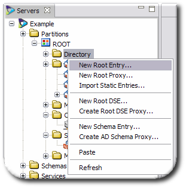
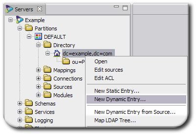

Chapter 8. Configuring the Virtual Directory
The purpose of a Penrose Virtual Directory is to establish relationships between existing servers, databases, and applications which contain data and to make that unified information easily accessible. This is done by creating a new, centralized organization for the entire data set (virtual directory tree), then establishing how the different pieces of information in different data sets relate to the new directory (mappings).
This chapter describes how to create and manage virtual directory trees and create relationships (mappings) between entries in data sources to create virtual directory entries.
8.1. About the Virtual Directory Tree and Handling Entries
Different data sources may not speak the same native protocol or have shared attributes, or even shared entries. The virtual directory "creates" a new hierarchy, analogous to the directory tree in a directory service, which names and organizes entries. However, this tree view does not create entries or configure a directory in reality; it is a virtual, dynamic way of viewing that information.
A virtual directory mirrors an LDAP directory. It has a hierarchical structure with a base DN, subtrees, and entries which can be searched and modified by LDAP operations and return data in LDIF. This is true regardless of the applications which store the data.
To create the unified view of all the disparate data sources, then, first define the structure of the directory tree and the way that information in a source is collected in the corresponding virtual directory entries.
As with an LDAP service, the first step is to decide what kind of hierarchy the directory tree will have. Each directory tree is laid out in forks and branches, similar to a genealogical tree. Since Penrose Virtual Directory creates a new view of data, the virtual directory does not need to imitate an existing directory hierarchy.
One option is to create a separate subtree for each data source. For example, if there are several different databases which hold employee data, each one could be carried into separate user subtrees, as shown in Figure 8.1, “Keeping Data in Separate Subtrees”. The entries are still searchable in a single location by searching the base DN.
Figure 8.1. Keeping Data in Separate Subtrees
However, the obvious problem is that there can be dozens, even hundreds, of data sources for a single company, and having a dispersed directory tree is unnecessarily unwieldy. There can also be a lot of overlap between the information in one database (or directories or human resources applications), and it makes sense to arrange the grouping of the directory according to the types of information in it. Penrose Virtual Directory can unify all of that information, allowing it to be reorganized in a more logical and easier to find way. To re-group the information in different sources, Penrose Virtual Directory can merge the entries into a single subtree, simply by pointing the configuration for each data source to the same subtree, as shown in Figure 8.2, “Merging Data Sources into a Single Subtree”. Even if a single sources holds different kinds of information (such as users and machines), the information can still be mapped to the appropriate subtree.
Figure 8.2. Merging Data Sources into a Single Subtree
For example, Example Company has several major applications: NIS servers, Active Directory domains, and several different kinds of SQL databases. All employees in the company have entries in the Active Directory domain and one of the SQL servers, while customer information is in a SQL server, and engineering and support have NIS entries.
Example Company decides to create an employees subtree, a customer subtree, and a server machine subtree. The data will still reside on the individual data sources (sparing the IT department the migration) but all of the relevant information will be unified into a single directory view.

Figure 8.3. Example Company's Virtual Directory Tree
8.2. Creating and Editing the Virtual Subtrees
The virtual directory tree is a hierarchical view, created by a Penrose Server administrator, to help organize the data from different sources. A directory entry is created in Penrose Studio in the Directory folder in the Partitions section. The configuration file is directory.xml in /opt/vd-server-2.0/conf/ for the default partition and /opt/vd-server-2.0/partitions/partition_name/DIR-INF for additional partitions.
A virtual directory contains seven pieces of information:
The distinguished name (DN) of the subtree or branch in the virtual directory tree; this is the only required parameter
Optionally, a class file to use to process operations against the entry
The sources to use for the directory
The object classes allowed for virtual directory entries
Attribute mappings, which define as what virtual directory attributes the source attributes are rendered
Source fields which map virtual directory attributes back to the original source attributes (reverse mappings)
Access control instructions (ACIs) that control user permissions to virtual directory entries
8.2.1. Creating the Virtual Directory in Penrose Studio
The virtual directory tree is a hierarchical view, created by a Penrose Server administrator, to help organize the data from different sources.
The first step is adding a root entry, creating the base DN as in a regular directory, in Section 8.2.1.1, “Adding a Base DN (Root Entry)”.
The next step involves specifying the subtrees, either by explicitly creating them (Section 8.2.1.2, “Adding a Static Directory Entry”) or by creating rules which dynamically determine what entries to include (Section 8.2.1.3, “Adding a Dynamic Directory Entry”).
A new directory tree can also be started by taking a snapshot image of an existing LDAP or by imitating an existing LDAP or Active Directory tree (called mapping the tree). See Section 8.4, “Duplicating Existing LDAP Servers” for more information on LDAP snapshots.
8.2.1.1. Adding a Base DN (Root Entry)
NOTE
The base DN entry is the highest entry in the directory tree.
In Penrose Studio, open the server entry, then expand the Partitions folder.
Right-click the Directory folder, and select the New Root Entry... option.
Fill in the distinguished name (DN) for the entry. This usually has the format
dc=domainComponent1,dc=domainComponent2.Optionally, supply the path name to a class for the static entry. There are five options:
org.safehaus.penrose.directory.Entry, the default class, which generates a directory without referencing an external source.org.safehaus.penrose.directory.Entry.DynamicEntry, which creates and joins entries from different external sources. For LDAP servers, this will also flatten the directory namespaces.org.safehaus.penrose.directory.Entry.ProxyEntry, which preserves the existing structure of an LDAP source, although DNs can be renamed. A proxy entry can only be used with LDAP sources and cannot be used for joining multiple sources.org.safehaus.penrose.directory.Entry.SchemaEntry, which creates acn=subschemasubtree, as in a regular LDAP server.org.safehaus.penrose.directory.Entry.RootEntry, which creates a root DSE, a special entry which contains information related to a server instance.
If no class is given, then Penrose Server uses the base class,
org.safehaus.penrose.directory.Entry.Select the object classes for the entries in the virtual directory tree on the left, then click the > arrows to move the object class to the list on the right. These object classes are used to define the entries displayed in the virtual directory, which also defines what attributes are allowed and required for the entries and how they are named.
Select which attribute will be used as the relative DN (RDN). This is the attribute that appears first in the entry name, also called the naming attribute. The selected attributes are primary keys, meaning those attributes must be present in the source entry for it to be included in the virtual directory.
The naming attribute determines what the far left component of the name for an entry is. For example, if the naming attribute is
dc, then the name of an entry could bedc=example; if it isou, the name could beou=People; or if it iscn, the name could becn=John Smith.Select attributes which will be available to the entries. By default, only the required attributes for the previously-selected object classes are listed. To add more attributes, click the Add button. In the window, select the object class and then attributes from its list.[1]
Optionally, double-click an attribute, and set rules for the possible attribute values. These are mappings which define the values of the virtual directory entry attributes.
text is an exact string of what the attribute value should be.
binary means that the attribute values are binary, such as for the
jpegPhoto,objectGID, oruserCertificateattributes. Whenbinaryis selected, no value needs to be supplied.variable means to use whatever value is in a given attribute in a specific data source. For example, for the
cnattribute, use thecnattribute from the LDAP1 source,LDAP1.cn.expression is a BeanShell script which transforms the attribute value in some way, such as generating it from other attribute values.
Click Finish at the bottom of the RDN window to save the new root entry.
NOTE
Choosing the object classes and primary keys can automatically create subtrees beneath the root DN. For example:
When setting up the root DN, an admin selects the
dcObjectobject class (for the base DN entry) and also theorganizationalUnitandinetorgpersonobject classes.Along with selecting the
dcattribute as a naming attribute, the admin selects theouattribute andcnattribute.The base DN is created. Penrose Virtual Directory also creates a static
ou=peoplesubtree entry and a dynamiccn=...entry.
When the entry is created, the base DN entry is not configured with any sources. To configure sources, see Section 8.2.2.2, “Editing the Directory Sources”.
8.2.1.2. Adding a Static Directory Entry
A static entry is for a clearly-defined subtree with constant values, such as ou=People.
In Penrose Studio, open the server entry, then expand the Partitions folder.
Open the Directory folder.
Right-click the virtual directory entry under which to create the static subtree, and select the New Static Entry... option.
NOTE
A static entry can be created under the root entry, under another static subtree, or under a dynamic subtree, depending on the planned virtual directory tree.
Enter the relative distinguished name (RDN) for the subtree entry (the name which is farthest on the left) and the parent DN. For example, if the subtree is named
ou=People,dc=example,dc=com, the RDN isou=Peopleand the parent DN isdc=example,dc=com.Optionally, supply the path name to a class for the static entry. There are five options:
org.safehaus.penrose.directory.Entry, the default class, which generates a directory without referencing an external source.org.safehaus.penrose.directory.Entry.DynamicEntry, which creates and joins entries from different external sources. For LDAP servers, this will also flatten the directory namespaces.org.safehaus.penrose.directory.Entry.ProxyEntry, which preserves the existing structure of an LDAP source, although DNs can be renamed. A proxy entry can only be used with LDAP sources and cannot be used for joining multiple sources.org.safehaus.penrose.directory.Entry.SchemaEntry, which creates acn=subschemasubtree, as in a regular LDAP server.org.safehaus.penrose.directory.Entry.RootEntry, which creates a root DSE, a special entry which contains information related to a server instance.
Enter the object classes to use or to allow for entries in this subtree. Click the object class in the list on the left, then click the > arrows to move the object class to the list on the right.
Check the checkbox by an attribute to set the relative DN (RDN). This is the attribute that appears first in the entry name, also called the naming attribute. The selected attributes are primary keys, meaning those attributes must be present in the source entry for it to be included in the virtual directory.
The naming attribute determines what the far left component of the name for an entry is. For example, if the naming attribute is
dc, then the name of an entry could bedc=example; if it isou, the name could beou=People; or if it iscn, the name could becn=John Smith.Select attributes which will be available to the entries. By default, only the required attributes for the previously-selected object classes are listed. To add more attributes, click the Add button. In the window, select the object class and then attributes from its list.[1]
Optionally, double-click an attribute, and set rules for the possible attribute values. These are mappings which define the values of the virtual directory entry attributes.
The attribute value can be any of the following:
text, an exact string of what the attribute value should be.
binary means that the attribute values are binary, such as for the
jpegPhoto,objectGID, oruserCertificateattributes. Whenbinaryis selected, no value needs to be supplied.variable, using whatever value is in a given attribute in a specific data source. For example, for the
cnattribute, use thecnattribute from the LDAP1 source,LDAP1.cn.expression, a BeanShell script which transforms the attribute value in some way, such as generating it from other attribute values.
Click the Finish button at the bottom of the RDN window to save the new static subtree.
When the entry is created, the static entry is not configured with any sources. To configure sources, see Section 8.2.2.2, “Editing the Directory Sources”.
8.2.1.3. Adding a Dynamic Directory Entry
A dynamic DN is used for RDNs which are constantly changing or which are numerous, such as user entries. The RDNs which are contained in a dynamic subtree are determined by the actual data being processed.
In Penrose Studio, open the server entry, then expand the Partitions folder.
Open the Directory folder.
Right-click the directory entry under which to create the dynamic entry, and select the New Dynamic Entry... option.
A dynamic entry can be created under the root entry, under a static subtree, or under another dynamic subtree, depending on the planned virtual directory tree. More probably, this will go under a static entry, such as putting both directory and database user entries under a single
ou=Peoplesubtree.NOTE
Alternatively, select New Dynamic Entry from Source.... This automatically creates a subtree based on the configuration of the selected source, such as using the configured object classes and using the source's primary key for the RDN, and skips source configuration steps.
Click the Add to add data sources for the virtual tree; there can be more than one source for the tree.
Select the source to use from the list in the Sources tab.

Click the Properties tab, and select the required way to handle the source for the different operations performed against the virtual directory, such as bind, search, and modify.
The properties for a bind operation can be any of the following:
required, which means that the users must bind against this source to connect to the virtual directory.
sufficient, which means that the user can be authenticated against any of the allowed (
sufficient) sources.ignore, which means that Penrose Virtual Directory will not use that source for authentication.
All other LDAP operations have the following options:
required, which means that the source must have the identity present for the entry to exist in the virtual directory. This is the default.
optional, which means that Penrose Virtual Directory will create a virtual entry out of all available sources, even if the specific source does not have the identity.
ignored, which means that Penrose Virtual Directory will not used this source to perform that specific operation.
If there is more than one data source selected for the directory, map the relationships between the different source entry attributes. For example, link the
cnattribute in a Red Hat Directory Server source to thenameattribute in a Microsoft Active Directory source.Select the object classes for the entries in the virtual directory subtree on the left, then click the > arrows to move the object class to the list on the right. These object classes are used to define the entries displayed in the virtual directory, which also defines what attributes are allowed and required for the entries and how they are named.
Check the checkbox by an attribute to set the relative DN (RDN). This is the attribute that appears first in the entry name, also called the naming attribute. The selected attributes are primary keys, meaning those attributes must be present in the source entry for it to be included in the virtual directory.
The naming attribute determines what entry attribute is when entries are displayed in the tree. For example, if the naming attribute is
dc, then the name of an entry could bedc=example; if it isou, the name could beou=People; or if it iscn, the name could becn=John Smith.Select attributes which will be available to the entries. By default, only the required attributes for the previously-selected object classes are listed. To add more attributes, click the Add button. In the window, select the object class and then attributes from its list.[1]
Optionally, double-click an attribute, and set rules for the possible attribute values. These are mappings which define the values of the virtual directory entry attributes.
text is an exact string of what the attribute value should be.
binary means that the attribute values are binary, such as for the
jpegPhoto,objectGID, oruserCertificateattributes. Whenbinaryis selected, no value needs to be supplied.variable means to use whatever value is in a given attribute in a specific data source. For example, for the
cnattribute, use thecnattribute from the LDAP1 source,LDAP1.cn.expression is a BeanShell script which transforms the attribute value in some way, such as generating it from other attribute values.
Click the Finish button at the bottom of the attributes window to save the new dynamic entry.
8.2.2. Editing the Virtual Directory in Penrose Studio
Editing a virtual directory's base DN or a static or dynamic subtree can edit the sources and attributes properties that the entry was created with.
8.2.2.1. Editing the Directory Configuration
In Penrose Studio, open the server entry, then expand the Partitions folder.
Open the Directory folder.
Double-click the directory entry to edit.
Edit the virtual directory configuration in the LDAP tab.
The virtual tree can be edited in several ways:
Changing the parent DN or the class associated with the entry.
Changing the object classes assigned to the entry.
Adding or removing attributes, creating mappings to sources, and setting naming attributes
Close the window and save the changes when prompted.
8.2.2.2. Editing the Directory Sources
NOTE
Dynamic entries automatically have sources configured for them, but base DN and static entries do not, so sources need to be added by editing the entry.
In Penrose Studio, open the server entry, then expand the Partitions folder.
Open the Directory folder.
Double-click the directory entry to edit.
Alternatively, right-click the subtree entry and select Edit Sources.
Click the Sources tab.
Add new sources or edit existing sources.
Additional fields or mappings can be added or edited to the sources, as in Section 9.3, “Configuring Basic Mapping”, and new sources can be created, as described in Section 7.2, “Configuring Sources in Penrose Studio”.
Close the window and save the changes when prompted.
8.2.3. Configuring the Virtual Directory Manually
There is a single directory file. Each root DN or subtree within the partition is added as an entry in this file. This is directory.xml, which is located in /opt/vd-server-2.0/conf for the default partition and in /opt/vd-server-2.0/partitions/partition_name/DIR-INF for additional partitions. This file is illustrated in Example 8.1, “Annotated directory.xml File”.
<directory> main file tag <entry dn="..."> the subtree dn <oc>...</oc> an object class for the subtree entry <at name="..." rdn="..."> an attribute with the subtree entry <mapping_type>...</mapping_type> the mapping for the attribute </at> <aci> an access control instruction for the subtree <permission>...</permission> </aci> <source> a source entry to use with the subtree <source-name>...</source-name> the source name, as it is in the Penrose Virtual Directory source entry <field name="..."> a reverse mapping entry for the source attribute <mapping_type>...</mapping_type> the mapping for the attribute </field> </source> </entry> </directory>
Example 8.1. Annotated directory.xml File
Not every parameter in Example 8.1, “Annotated directory.xml File” is required simply to create the entry. For example, mapping attributes requires the <field> parameter, but the entry can exist without the mapping. Likewise, a dynamic subtree requires a <source> definition, but a static one does not.
To create a subtree, add a new entry to the directory.xml file. To edit a subtree, add, remove, or edit parameters within the entry. Example 8.2, “Example directory.xml File” shows three different subtree entries for a base DN, static subtree, and dynamic subtree.
IMPORTANT
Always restart Penrose Server after editing the configuration file. For example:
service vd-server restart
<directory>base DN entry<entry dn="dc=example,dc=com"> <oc>dcObject</oc> <oc>groupOfUniqueNames</oc> <oc>inetOrgPerson</oc> <oc>organizationalPerson</oc> <oc>organizationalUnit</oc> <oc>person</oc> <oc>top</oc> <at name="dc" rdn="true"> <constant>example</constant> </at> <aci> <permission>rs</permission> </aci> </entry>static subtree entry<entry dn="ou=people,dc=example,dc=com"> <oc>organizationalUnit</oc> <oc>top</oc> <at name="ou" rdn="true"> <variable>LDAP1.ou</variable> <expression var="person">source_name.attribute</expression> </at> </entry>dynamic subtree entry<entry dn="cn=...,ou=people,dc=example,dc=com"> <oc>inetOrgPerson</oc> <oc>organizationalPerson</oc> <oc>person</oc> <oc>top</oc> <at name="cn" rdn="true"> <expression var="person">cn=*</expression> </at> <source alias="LDAP1" search="required" bind="required" add="required" delete="required" modify="required" modrdn="required"> <source-name>LDAP1</source-name> <field name="ou"> <constant>example</constant> </field> </source> </entry> </directory>
Example 8.2. Example directory.xml File
The parameters available for any kind of Penrose Virtual Directory subtree entry are listed in Table 8.1, “Parameters for Subtree Entries”.
A base DN entry must contain enough information to define the DN, required object classes and attributes for the virtual directory tree, and the ACIs for the entry:
An
<entry>tag with thedn="..."argumentAn
<oc>tagAn
<at>tag with thename="..."argument and some kind of mapping sub-tag, identified as <mapping_type> in Example 8.2, “Example directory.xml File”An
<aci>tag with a<permission>sub-tag to define directory access (more specific access control is possible, as described in Section 8.6.4, “Setting Access Controls Manually”)
A static entry has similar definition requirements as the base DN, only it does not have an ACI by default:
An
<entry>tag with thedn="..."argumentAn
<oc>tagAn
<at>tag with thename="..."argument
A dynamic entry has the most complex definition by default, allowing additional information about the source mapping:
An
<entry>tag with thedn="..."argumentAn
<oc>tagAn
<at>tag with thename="..."argumentA
<source>entry with an optionalalias="..."argument to give a nickname to the source and with optional tags for different LDAP operations.<source-name>subtag which identifies an existing Penrose Server source<field>subtags which define reverse mappings for the source attributes, and <mapping_type> tags defining the type of linking
| Tag or Parameter | Description | Example |
|---|---|---|
| <entry> |
Opens and closes the entire subtree entry. There is one parameter for the <entry> tag, dn.
| |
| dn="..." | Gives the full distinguished name for the entry. For the base DN, this must be explicitly defined. |
dn="dc=example,dc=com" |
| fetch="true|false" |
Retrieves the entry from the sources before running any operations on the entry, such as modify or add. This can slow down operations.
|
<entry dn="dc=example,dc=com"
|
| <oc> |
Contains an object class defined for the base DN. There can be more than one <oc>, for each object class and superior object class defined for the entry.
|
<oc>dcObject</oc> <oc>top</oc> |
| <at> |
Contains an attribute defined for the base DN. There can be more than one <at> line. An <at> tag can have two arguments, name= and rdn=. <at> also contains a sub-tag which defines the mapping type for the virtual attribute to the source attribute: constant, variable, or expression.
|
<at name="dc" rdn="true"> <constant>example</constant> </at> |
| name="attribute" | Contains the LDAP attribute which is allowed for the entry. |
<at
|
| rdn="true|false" | Identifies a naming attribute or primary key. If this argument is missing, the default value is false. |
<at name="cn"
|
| <mapping_type> |
These are any of three sub-tags which are used with a <at> or <field> tag to define the method of mapping attributes. There are three options:
|
<variable>LDAP1.cn</variable> |
| <aci> |
Defines the access control instructions to the virtual directory subtree. By default, this contains a <permission> sub-tag, but the ACI can also define a target DN, target attributes, the scope, and whether to grant or deny access. This is explained more in Section 8.6.4, “Setting Access Controls Manually”.
|
<aci> <permission>rs</permission> </aci> |
| <source> | Contains the source entry definition for the directory. | |
| ldap_operation="..." |
Optional argument for the <source> tag which indicates what authentication to require to connect to the source for different LDAP operations. The properties for a bind operation can be any of the following:
|
<source
|
| alias="..." |
Optional argument for the <source> tag which contains a nickname for the source.
|
<source
|
| <source-name> | Contains the name of the source. This source must already be configured; for instructions, see Chapter 7, Configuring Data Sources. |
<source-name>LDAP1</source-name> |
| <field> |
Defines a reverse mapping from a source attribute to a virtual entry attribute. Like the <at> mapping, this has a name> parameter to identify the virtual entry's LDAP attribute and a sub-tag which defines the mapping from the source attribute to the virtual attribute: constant, variable, or expression.
|
<field> <variable>cn</variable> </field> |
Table 8.1. Parameters for Subtree Entries
8.3. Creating Special Directory Entries
In some virtual directory configurations or for identity federation, it can be necessary to have operational entries defined for the directory, such as a root DSE or cn=subschema.
8.4. Duplicating Existing LDAP Servers
Penrose Virtual Directory provides several ways to duplicate, exactly, an existing LDAP directory source. This can be an effective way to proxy LDAP services or to mimic an existing LDAP structure in the virtual directory hierarchy.

Penrose Server can duplicate an existing directory's subtree or entire DIT. It is also possible to duplicate other definitions for the directory, such as its root directory entry (which identifies the instance) and its schema. Duplicating these special configuration entries makes the Penrose Virtual Directory appear to clients as the existing LDAP source.
Because these mappings duplicate the configuration of the source directory, they differ from other partitions or subtrees which connect with the user databases of the LDAP server. In this case, the mapping copies the configuration database, such as o=NetscapeRoot in Red Hat Directory Server, as the base DN.
8.4.1. Mapping an LDAP Tree
Mapping an LDAP tree copies the subtree or entire directory in the existing LDAP source and duplicates it in the virtua directory.
8.4.2. Mapping the Root DSE
The root DSE is a special entry which defines the directory server instance, hence the name directory server entry. This special entry defines the supported types of LDAP protocols, supported password and authentication schemes, the vendor name and version number, and other features of the instance. Duplicating the root DSE of an existing server means that LDAP clients will treat Penrose Virtual Directory as if they were talking to the original LDAP source directly. This is one way of using Penrose Virtual Directory as a proxy for the other server.
8.5. Using Proxy Services
Penrose Virtual Directory can function as a proxy for an LDAP server. In this configuration, Penrose Virtual Directory flattens the namespaces between sources, but all operations are still transmitted to and carried out on the original source directly.
This chapter explains how to configure proxy entries, different proxy configurations, and authentication methods for users connecting to Penrose Virtual Directory as an LDAP proxy.
NOTE
Penrose Virtual Directory can be used as a proxy to a database or LDAP server. By setting the cache expiration to 0, no data will be cached by Penrose Virtual Directory, so all requests from the clients will be forwarded directly to the data sources.
Penrose Virtual Directory can be configured to work as a proxy to another LDAP server, allowing Penrose Virtual Directory to control the access to the LDAP server. There are two primary configurations for an LDAP proxy in Penrose Virtual Directory:
In a basic proxy, only certain parts of the directory are exposed. A mapping is created for the subtree, such as
ou=people,dc=example,dc=com, and the operation passes through Penrose Server and is performed on the source,ou=users,dc=source,dc=com.In an aggregated proxy, Penrose Virtual Directory serves as a proxy for multiple LDAP servers or sources. In this case, a separate subtree is created for each source, such as
ou=people,ou=source1,dc=example,dc=comandou=people,ou=source2,dc=example,dc=com. Searching the base DN,dc=example,dc=com, returns entries from both sources.
For any proxy configuration, Penrose Server performs two translations to the data:
The DN in the LDAP request is translated into the original name space.
The DNs of the search results are renamed into the proxy name space.
This data translation is an important function of proxy LDAP services in Penrose Server. All operations performed within an organization can use a standardized naming format without having to reconstruct existing servers. A standard namespace also makes it significantly easier and faster to find directory information or perform directory operations.
8.5.1. Creating an LDAP Proxy
Penrose Virtual Directory can be used as a proxy of an LDAP directory, including any LDAPv3-compliant directory and Active Directory. A proxy is configured through a simple wizard in Penrose Studio.
In Penrose Studio, open the Partitions in the top menu and select the New LDAP Proxy Partition option.
Alternatively, open the server entry, and then right-click the Partitions folder, and select the New LDAP Proxy Partition option.
Enter the name for the proxy entry, and select whether to map (mirror) the directory hierarchy and, optionally, schema.
The root directory server entry (root DSE) is a vital resource for finding information about a directory server instance because the root DSE defines all of the characteristics of the directory itself. For mapping an Active Directory instance, start at the root DSE to identify the available naming context, supported controls, and locations for the domain, schema, and configuration entries.
The schema mapping is another important consideration when creating a proxy to an Active Directory server. For the proxied virtual namespace, Penrose Server can use Active Directory schema to define entries or can map the Active Directory schema to LDAPv3 standard schema.
Click the Add button to add the LDAP server host and port.
Enter the connection information for the LDAP directory, including the server and port, log in name and password, and subtree or base DN to map.
Optionally, enter any additional configuration parameters, such as a Java class to extend the Penrose Server operations.
8.5.2. Configuring an LDAP Proxy Manually
A proxy entry essentially consists of a connection entry, a source entry, and a mapping entry. These entries can be configured manually by editing the appropriate configuration files for the partition.
Add the connection for the target LDAP server to
connections.xml. Include the required connection information:The URL to the server which is being proxied
The username and password to use to bind to the server
For example:
<connections> <connection name="Proxy"> <adapter-name>LDAP</adapter-name> <parameter> <param-name>java.naming.provider.url</param-name> <param-value>ldap://ldap.example.com</param-value> </parameter> <parameter> <param-name>java.naming.security.principal</param-name> <param-value>cn=proxy user,dc=example,dc=com</param-value> </parameter> <parameter> <param-name>java.naming.security.credentials</param-name> <param-value>password</param-value> </parameter> </connection> </connections>Creating connections is described in Chapter 6, Configuring Connections.
Create a source entry for the original subtree in the target server, which will be proxied in a virtual subtree on Penrose Server. Include the original subtree DN and, optionally, the authentication method allowed to that subtree. For example:
<sources> <source name="users"> <connection-name>Proxy</connection-name> <parameter> <param-name>baseDn</param-name> <param-value>dc=source1,dc=com</param-value> </parameter> <parameter> <param-name>authentication</param-name> <param-value>full</param-value> </parameter> </source> </sources>Creating sources is described in Chapter 7, Configuring Data Sources.
For a proxy configuration, simply create a mapping entry in
mapping.xmlwhich points to the source and identifies it as a proxy. The DN specified is the virtual namespace, not the original namespace. For example:<mapping> <entry dn="ou=proxy,dc=example,dc=com"> <source name="users"> <source-name>source1</source-name> </source> <handler>PROXY</handler> </entry> </mapping>Restart Penrose Server.
service vd-server restart
IMPORTANT
Always restart Penrose Server after editing the configuration file.
TIP
A sample proxy configuration is available in /opt/vd-server-2.0/samples/proxy. To create a new proxy partition quickly, copy the files from /opt/vd-server-2.0/samples/proxy/partition into a new proxy directory in the /opt/vd-server-2.0/partitions folder. Update the Penrose Server configuration files:
Edit the listed connections in proxy partition's
connections.xmlfile.Edit the server configuration file in
/opt/vd-server-2.0/conf/server.xmlto include the new proxy entry.<server> <partition name="proxy" path="partitions/proxy"/> </server>
Restart Penrose Server, and point the LDAP browser to the new proxy DN.
8.5.3. Configuring Authentication for Proxies
When Penrose Virtual Directory works as a proxy for an LDAP server, all operations for that server pass through Penrose Virtual Directory transparently and are sent to the LDAP directory. That means, in some way, Penrose Virtual Directory interacts with the target LDAP server as one of its users. Authentication between Penrose Virtual Directory and the LDAP server can be handled in three different ways:
Simple PTA. The simplest method is for a user to bind to the virtual directory as a user in the proxy subtree, and that user and its credentials are used by Penrose Server to bind to the LDAP server. Because The user binding to the virtual directory passes through Penrose Server to bind as the same user on the LDAP directory, this is called pass-through authentication.
Only authentication is performed as the user; any other operation, such as search and modify operations, is performed as the Penrose Virtual Directory user which is configured in the
connections.xmlfile.This is the default.
Full PTA. Like simple PTA, full PTA uses the bind credentials (username and password) sent to Penrose Virtual Directory to bind to the LDAP server. However, for full PTA, every operation — authentication, as well as searches, modifies, and deletes — is performed using the user's bind credentials.
Disabled. When authentication is disabled, any attempts for a user to bind to the LDAP server is rejected. Only the Penrose Virtual Directory user configured in the
connections.xmlfile is allowed to access the LDAP server.
To configure authentication for proxy access in Penrose Virtual Directory, add the authentication parameter with the appropriate value (default, full, or disabled) to the source entry in sources.xml. For example:
<source name="users">
<connection-name>Proxy</connection-name>
<parameter>
<param-name>baseDn</param-name>
<param-value>dc=source1,dc=com</param-value>
</parameter>
<parameter>
<param-name>authentication</param-name>
<param-value>full</param-value>
</parameter>
</source>Creating sources is described in Chapter 7, Configuring Data Sources.
IMPORTANT
Always restart Penrose Server after editing the configuration file. For example:
service vd-server restart
8.6. Setting Access Controls on the Virtual Directory
Penrose Virtual Directory allows restrictions to be placed on what parts of the virtual directory can be accessed, by whom, and what operations they are allowed to perform. These access control instructions are enforced before any transaction is sent to the source, so these ACIs are enforced in addition to whatever ACIs are already set on the source.
8.6.1. Placing ACIs and ACI Inheritance
Penrose Virtual Directory also support inherited ACIs. If an ACI is set on the base DN or a subtree, then the ACI is automatically applied to every entry below that subtree in the virtual directory, unless the scope is limited specifically.
If an ACI is placed on an entry, it overrides any inherited ACIs which conflict with it, except for deny ACIs. Deny ACIs always supersede allow ACIs.
Those two ACI behaviors — inheritance and overrides — make organizing and placing ACIs very important. To be effective and manageable, plan out where ACIs should be placed carefully. Make ACIs at high levels in the directory tree as general as possible, and set very specific ACIs to the entry which will be modified.
8.6.2. Default ACIs
When a base DN entry is created in Penrose Studio, there is a single ACI set automatically which allows full read and search access to the virtual directory. This is inherited by any subtrees created beneath the base DN. This ACI configuration is shown in Example 8.3, “Example Default ACI”.
If a base DN entry is simply added to directory.xml, then no ACI is required. If no ACI is set for a subtree, then the default setting is to restrict all users but the superuser.
<entry dn="dc=example,dc=com">
...
<aci>
<permission>rs</permission>
</aci>
</entry>Example 8.3. Example Default ACI
The only required parameter for the ACI entry is the <permission> line. In the default, the scope, subject, and propagation are assumed.
8.6.3. Setting Access Controls in Penrose Studio
Open the server entry in Penrose Studio, and expand the Partitions folder.
Open the Directory folder, and select the base DN or subtree to which to set the access control.
Right-click the subtree entry, and select Edit ACLs from the menu.

Alternatively, double-click the subtree, and, when the editor opens in the main window, click the ACLs table.
Set the Subject for the ACI. This is the kind of user to whom the ACI is applied.
There are several different options for the users for the ACI:
anybody applies the ACI to all users
authenticated applies the ACI to users who are logged into the source
anonymous applies the ACI to users who are not logged into the source
self applies the ACI to users who are accessing their personal entries
user applies the ACI to whatever users are specified in the User/Group DN field
If the subject for the ACI is
user, enter the DN of the user or users to target.Set what part of the entry is affected by the ACI.
If the entire entry is the target, then set the target to OBJECT.
If only a subset of attributes in the entry are affected, then select the ATTRIBUTE menu item, and fill in a comma-separated list of LDAP attributes in the Attributes field.
Check the Propagate ACL checkbox if this ACL should be applied to entries below the subject DN in the virtual directory tree. If the ACI should only apply to the specified entry, then uncheck the box.
Set the action for the ACI. There are two options: to allow the specified actions or to deny the specified actions.
Select what actions to or on the source will be allowed or denied.
read allows the user to view an entry or attribute; this is allowed by default
search allows the user to search for an entry or attribute
write allows the user to change the entry or attribute
delete allows the user to remove the entry or attribute
add child allows the user to add a new entry beneath this entry
Close the editor window, and save the changes when prompted.
The new ACI is listed in the Access Control List section for the entry.
If the Propagate ACL checkbox is selected, then the ACI is also listed in all of the child entries under the subtree.
8.6.4. Setting Access Controls Manually
Access controls are set on each individual subtree or base DN entry for the virtual directory in the directory.xml file. The directory.xml file is in /opt/vd-server-2.0/conf/ for the default partition and in /opt/vd-server-2.0/partitions/partition_name/DIR-INF for any additional partition.
An ACI defines what operations can be done, who the permissions apply to, and where in the directory tree the permissions are set. Since the ACI is related to the virtual directory tree, this ACI entry is set in the directory.xml file in the subtree entry.
An ACI entry defines the following information:
The subject, which is the virtual directory users to whom the ACI applies; for certain kinds of subjects, the DN is required to identify the entries to whom the ACI applies
The target, which is the part of the entry which is controlled by the ACI, and, possibly, a list of attributes which are controlled by the ACI
The scope, which sets whether the ACI applies only to the subject entry or to every entry beneath it in the directory (meaning, whether it is inherited)
The action, which is whether the operations listed are allowed or denied to the subject
The permission, which is the operations, such as search and modify, which can be performed by the subject
The only required information is the permission.
IMPORTANT
Always restart Penrose Server after editing the configuration file. For example:
service vd-server restart
An example ACI is in Example 8.4, “Annotated Example ACI”. The different options and parameters for configuring the ACI are listed in Table 8.2, “ACI Entry Tags and Parameters”.
<entry dn="cn="...",ou=People,dc=example,dc=com"> ... <aci subject="user"> defines the users affected by the ACI <dn>cn="...",ou=People,dc=example,dc=com</dn> gives the DN of the subject entry <target>ATTRIBUTES</target> defines whether the ACI is for the entire entry or an attribute <attributes>userPassword</attributes> lists attributes controlled by the ACI <action>deny</action> whether the action is allowed or denied for the user <scope>OBJECT</scope> whether the ACI is for the entire subtree or just the subject <permission>rswd</permission> the operations which are affected b the ACI </aci> ... </entry>
Example 8.4. Annotated Example ACI
| Tag or Parameter | Description | Default Value | Example | |||||
|---|---|---|---|---|---|---|---|---|
| subject= |
Defines to what users this ACI applies. This is an option set on the <aci> tab. There are five possible values:
| anybody | <aci subject="user" | |||||
| <dn> |
Gives the DN of the user to which the ACI is applied. Only required with the argument subject=user.
| <dn>cn=*,ou=people, dc=example,dc=com</dn> | ||||||
| <target> |
Sets whether the ACI applies to the entire entry or to a subset of attributes in the entry. There are two options:
| OBJECT | <target>OBJECT</target> | |||||
| <attributes> | Gives the attributes to which the ACI applies, in a comma-separate list. Only required if the target is set to ATTRIBUTES. | <attributes>userPassword, userCertificate</attributes> | ||||||
| <scope> |
Determines whether the ACI is inherited by entries beneath this entry in the subtree or only applies to the entry on which it is set. There are two options:
| SUBTREE | <scope>OBJECT</scope> | |||||
| <action> |
Determines whether the ACI allows a certain action or prohibits a certain action.
IMPORTANT
| grant | <action>deny</action> | |||||
| <permission> |
Defines what operations are being allowed or denied. There are five operations allowed through Penrose Virtual Directory:
| n/a | <permission>rwsd</permission> |
Table 8.2. ACI Entry Tags and Parameters
[1] It is possible to select an attribute which does not belong to any of the selected object classes for the DN. Penrose Virtual Directory does not enforce or validate schema elements.